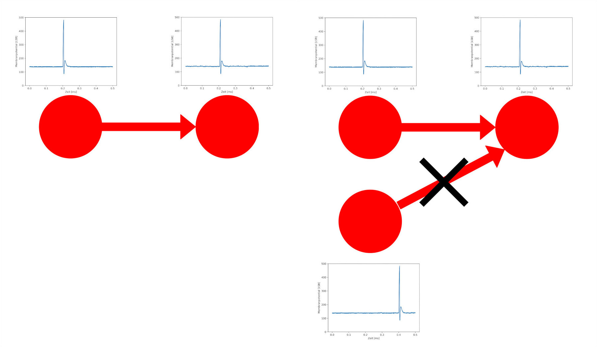
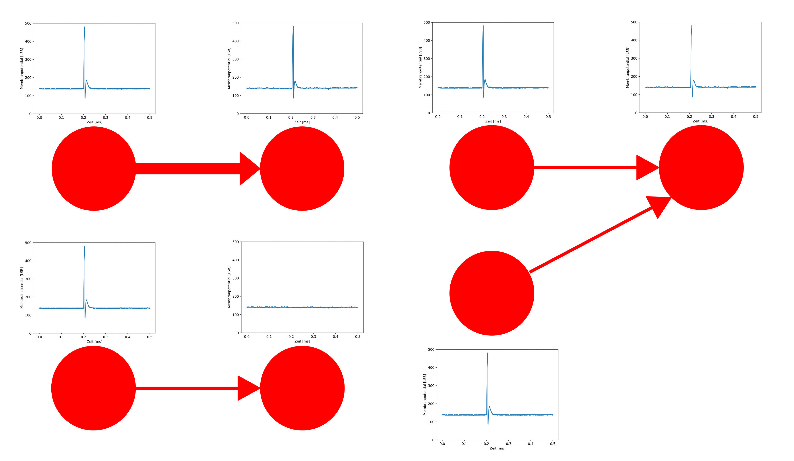
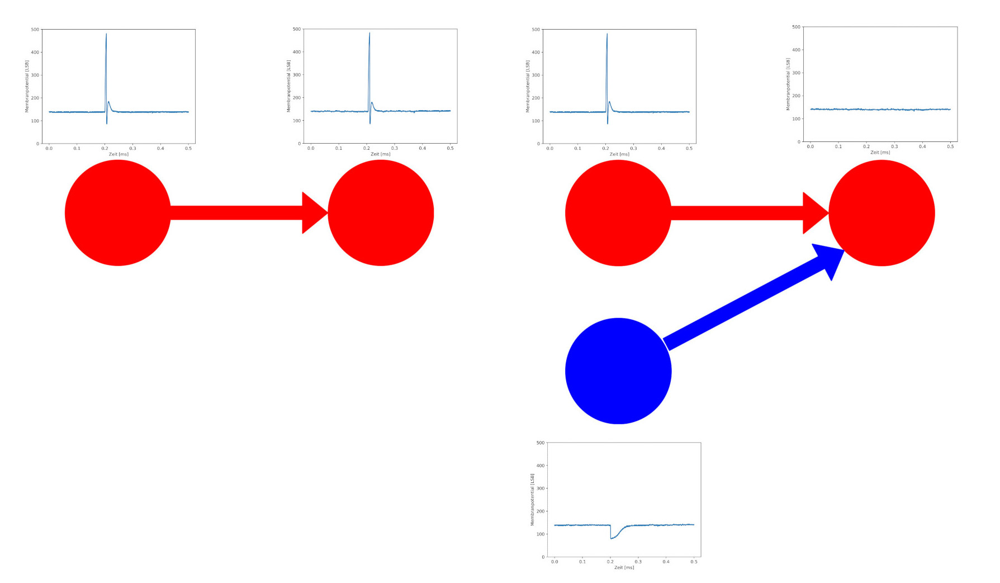

Neuronenverbindungen - Synapsen¶
Unser Wissen ist also in den Verbindungen zwischen den Neuronen gespeichert. Diese Verbindungen heißen Synapsen. Dabei sind drei Dinge entscheidend:
Wo sitzen Synapsen, also welche Neuronen sind miteinander verbunden?
Wie stark sind die Verbindungen, also was ist ihr synaptisches Gewicht?
Was ist die Art der Synapse, ist sie also anregend oder hemmend?
1. Synapsen Position¶
Eine Synapse verbindet immer ein Senderneuron mit einem Empfängerneuron. Wenn das Senderneuron ein Aktionspotential generiert, man sagt auch es feuert, dann wird dieses Signal durch die Synapse an das Empfängerneuron weitergegeben. Synapsen entstehen dort, wo ein kausaler Zusammenhang vorliegt. Das bedeutet, wenn ein Empfängerneuron das Signal eines bestimmten Senderneuron braucht, um seine Funktion zu erfüllen, benötigt es an dieser Stelle eine Synapse. Wenn es andererseits eine Synapse zwischen zwei Neuronen gibt, das Empfängerneuron aber den Reiz des Senderneurons nicht braucht, um seine Aufgabe zu erfüllen, dann besteht an dieser Stelle kein kausaler Zusammenhang zwischen den Neuronen und die Synapse wird verschwinden.
{kind=link}
2. Synaptisches Gewicht¶
Das Entstehen und Verschwinden von Synapsen geschieht nicht plötzlich, sondern ist ein Prozess, bei dem das synaptische Gewicht eine große Rolle spielt. Dieses bestimmt, wie stark der Reiz des Senderneurons beim Empfängerneuron ankommt. Ist das synaptische Gewicht hoch, so handelt es sich um eine starke Neuronenverbindung und das Aktionspotential des Senderneurons bewirkt eine starke Reaktion beim Empfängerneuron. Andersherum beeinflusst der Reiz bei einer Synapse mit niedrigem Gewicht das Empfängerneuron nur schwach. Die Neuronen und ihre Verbindungen bilden ein regelrechtes Netz, weshalb man auch von einem Netzwerk der Synapsen sprechen kann. Dieses ist keineswegs statisch, sondern verändert sich dauerhaft. Es entstehen neue Synapsen, wenn sie Neuronen verbinden, die im kausalen Zusammenhang zueinander stehen, erhöht sich ihr Gewicht, wo andere Verbindungen keine Informationen mehr übermitteln, sinkt das synaptische Gewichte oder die Synapsen verschwinden vollkommen. Das Zusammenspiel aus mehreren Neuronen und Synapsen erlaubt das Lösen von komplexeren Problemen.
{kind=link}
3. Synapsen Art¶
Beim letzten Punkt gibt es zwei Hauptgruppen, in die sich die Synapsen unterteilen lassen: exzitatorische (anregende) und inhibitorische (hemmende) Synapsen. Exzitatorisch Synapsen bewirken, dass beim Feuern des Senderneurons das Empfängerneuron auch zum Feuern angeregt wird. Damit das Empfängerneuron allerdings tatsächlich feuert, benötigt es ein hohes synaptisches Gewicht oder viele Reize, die von mehreren Neuronen oder auch vom selben Senderneuron in kurz aufeinanderfolgenden Zeitabständen kommen. Inhibitorische Synapsen bewirken das Gegenteil. Wenn das Senderneuron feuert, unterdrückt dieser Reiz die Bildung eines Aktionspotentials beim Empfängerneuron. Eine inhibitorische Verbindung alleine hat daher keine große Auswirkung auf das Empfängerneuron, gemeinsam mit anderen exzitatorischen Verbindungen kann sie das Geschehen aber merklich beeinflussen. So kann eine exzitatorische Verbindung, die das Empfängerneuron alleine zum Feuern bringen würde, durch eine inhibitorische Verbindung ausgeglichen werden, was dazu führt, dass mit dieser weiteren Verbindung das Neuron nicht mehr feuert.
{kind=link}
Synapsennetzwerke¶
Mit diesen einfachen Prinzipien lassen sich ziemlich interessante Netzwerke bauen. Wir wollen uns im Folgenden mit binären Logikoperationen beschäftigen. Binär bedeutet, dass es nur zwei Möglichkeiten gibt. Hier ist es, entweder das Neuron feuert oder es feuert nicht.
Die Oder-Operation¶
Für die Oder-Operation betrachten wir ein Netzwerk aus drei Neuronen, wobei zwei Eingangsneuronen mit einem Ausgangsneuron verbunden sind. Das Ausgangsneuron soll dann feuern, wenn Neuron 1 oder Neuron 2 feuert. Dieses Oder ist dabei nicht exklusiv, also wie ein und/oder zu verstehen. Das Ausgangsneuron feuert also genau dann, wenn Neuron 1, Neuron 2 oder beide feuern. Diese Logik ist auch noch einmal in einer Wahrheitstabelle dargestellt.

Neuron 1 |
Neuron 2 |
Ausgangsneuron |
|---|---|---|
- |
- |
- |
x |
- |
x |
- |
x |
x |
x |
x |
x |
Die Umsetzung ist nun ziemlich simpel. Wir brauchen zwei exzitatorische Synapsen und ihr Gewicht muss so gewählt werden, dass ein Reiz, der von Neuron 1 oder 2 kommt, ausreicht, um das Ausgangsneuron zum Feuern zu bringen.
Doch bevor wir mit unseren Experimenten beginnen können, müssen wir unsere Umgebung vorbereiten:
from _static.common.helpers import setup_hardware_client
setup_hardware_client()
Jetzt können wir mit dem Experiment beginne:
# Module zum Modellieren feuernder neuronaler Netzwerke und zur graphischen Darstellung werden geladen.
import pynn_brainscales.brainscales2 as pynn
%matplotlib inline
import matplotlib.pyplot as plt
from _static.common.helpers import get_nightly_calibration
# Die Umgebung wird vorbereitet.
calib = get_nightly_calibration()
pynn.setup(initial_config=calib)
# Die Eingangsneuronen werden erstellt.
# Sie erzeugen ein Aktionspotential zu dem Zeitpunkt, der in `spike_time` steht.
########## Hier ändern ##########
spike_time1 = [0.2]
spike_time2 = []
#################################
neuron1 = pynn.Population(4, pynn.cells.SpikeSourceArray(spike_times=spike_time1))
neuron2 = pynn.Population(4, pynn.cells.SpikeSourceArray(spike_times=spike_time2))
# Das Ausgangsneuron wird erstellt.
output_neuron = pynn.Population(1, pynn.cells.HXNeuron())
# Die Aktivität des Ausgangsneurons wird aufgezeichent.
output_neuron.record(["spikes", "v"])
# Die Synapsen und ihre Gewichte werden definiert. Das Gewicht kann einen Wert zwischen 0-63 haben.
########## Hier ändern ##########
synapse_weight1 = 63
synapse_weight2 = 32
#################################
synapse1 = pynn.synapses.StaticSynapse(weight=synapse_weight1)
synapse2 = pynn.synapses.StaticSynapse(weight=synapse_weight2)
# Die Neuronenverbindungen werden erstellt.
pynn.Projection(neuron1, output_neuron, pynn.AllToAllConnector(),
synapse_type=synapse1, receptor_type="excitatory")
pynn.Projection(neuron2, output_neuron, pynn.AllToAllConnector(),
synapse_type=synapse2, receptor_type="excitatory")
# Das Netzwerk wird für eine spezifizierte Zeit laufen gelassen.
# Diese wird in Millisekunden angegeben.
duration = 0.5
pynn.run(duration)
# Nun kann zurückgelesen werden, ob das Ausgangsneuron gefeuert hat.
spiketrain = output_neuron.get_data("spikes").segments[0].spiketrains[0]
print(f"Das Neuron hat {len(spiketrain)} mal gefeuert.")
print(f"Die Zeitpunkte der Spikes waren: {spiketrain}")
# Auch das Membranpotential des Ausgangsneurons kann visualisiert werden.
mem_v = output_neuron.get_data("v").segments[0].irregularlysampledsignals[0]
plt.figure()
plt.plot(mem_v.times, mem_v)
plt.xlabel("Zeit [ms]")
plt.ylabel("Membranpotential [LSB]")
plt.show()
pynn.end()
Testet ob dieses Netzwerk funktioniert. Probiert dafür verschiedene Kombinationen an Stimuli von den Eingangsneuronen und verschiedene synaptische Gewichte aus.
Die Nicht-Operation¶
Nun sollt ihr selbst zum Einsatz kommen. Die nächste Operation, die wir betrachten wollen, ist die Nicht-Operation. Hier haben wir nur ein Eingangsneuron, desses Signal das Ausgangsneuron verneinen soll. Konkret bedeutet das, wenn das Eingangsneuron feuert, soll das Ausgangsneuron nicht feuern und wenn das Eingangsneuron nicht feuert, dann soll das Ausgangsneuron feuern.
{kind=link}
Eingangsneuron |
Ausgangsneuron |
|---|---|
- |
x |
x |
- |
Überlegt euch zuerst, wie das Netzwerk aussehen muss, das diese Operation implementiert. Betrachtet dann den obigen Code, erkennt, was die einzelnen Stellen tun und ergänzt die nötigen Befehle an die passenden Stellen im unteren Code.
Hinweis: Hier wird ein Hilfsneuron benötigt.
# Module zum Modellieren feuernder neuronaler Netzwerke und zur graphischen Darstellung werden geladen.
import pynn_brainscales.brainscales2 as pynn
%matplotlib inline
import matplotlib.pyplot as plt
from _static.common.helpers import get_nightly_calibration
# Die Umgebung wird vorbereitet.
calib = get_nightly_calibration()
pynn.setup(initial_config=calib)
''' Beginn eurer Anpassungen (diese Zeile löschen)
# Das Eingangsneuron wird erstellt.
# Es erzeugt ein Aktionspotential zu dem Zeitpunkt, der in `spike_time1` steht.
spike_time1 =
neuron1 =
# Ein Hilfsneuron wird erstellt.
# Es erzeugt ein Aktionspotential zu dem Zeitpunkt, der in `spike_time_help` steht.
spike_time_help =
neuron_help =
# Das Ausgangsneuron wird erstellt.
output_neuron =
# Die Aktivität des Ausgangsneurons wird aufgezeichent.
# Die Synapsen und ihre Gewichte werden definiert. Das Gewicht kann einen Wert zwischen 0-63 haben.
synapse_weight1 =
synapse_weight_help =
synapse_type1 =
synapse_type_help =
# Die Neuronenverbindungen werden erstellt.
# Das Netzwerk wird für eine spezifizierte Zeit laufen gelassen.
# Diese wird in Millisekunden angegeben.
# Nun kann zurückgelesen werden, ob das Ausgangsneuron gefeuert hat.
# Auch das Membranpotential des Ausgangsneurons kann visualisiert werden.
Ende eurer Anpassungen (diese Zeile löschen)'''
pynn.end()
Die Und-Operation¶
Betrachten wir noch die Und-Operation. Ähnlich wir bei der Oder-Operation haben wir wieder zwei Eingangsneuronen und ein Ausgangsneuron. Diesmal soll letzteres aber nur genau dann feuern, wenn Neuron 1 und Neuron 2 feuern.
Neuron 1 |
Neuron 2 |
Ausgangsneuron |
|---|---|---|
- |
- |
- |
x |
- |
- |
- |
x |
- |
x |
x |
x |
Die einfachste Art diese Operation umzusetzen, ist indem man sich die synaptischen Gewichte zu Nutze macht. Überlegt euch, wie das Netzwerk aussehen kann, und versucht es mithilfe des vorherigen Codes komplett selbst zu programmieren.
# Module zum Modellieren feuernder neuronaler Netzwerke und zur graphischen Darstellung werden geladen.
import pynn_brainscales.brainscales2 as pynn
%matplotlib inline
import matplotlib.pyplot as plt
from _static.common.helpers import get_nightly_calibration
# Die Umgebung wird vorbereitet.
calib = get_nightly_calibration()
pynn.setup(initial_config=calib)
# Euer Code
pynn.end()
Diese Operationen sind recht simpel, aber sehr mächtig. Schaltet man sie richtig hintereinander, lässt sich mit ihnen jeder noch so komplizierte Logikausdruck umsetzen. Dies ist die Grundlage für das, was moderne Prozessoren machen. Wir sehen also, dass Neuronen prinzipiell alles können, was ein Computer auch kann.